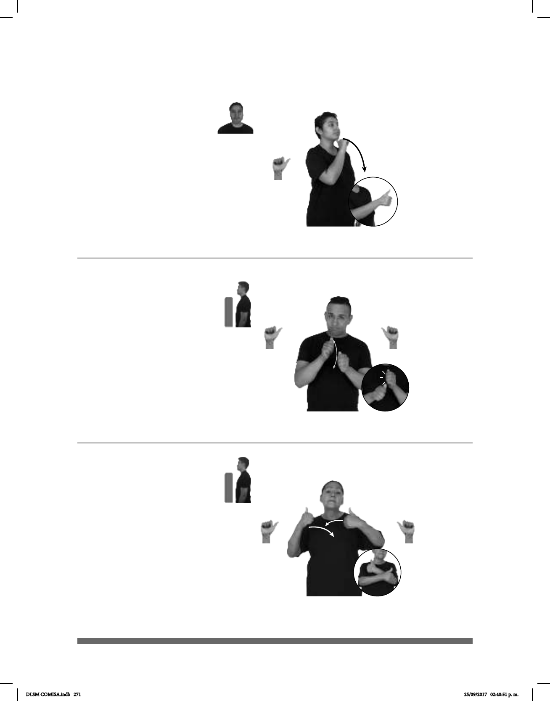

271
(A-116)
pos-MI JEFE TODOS PAGAR-EFECTIVO++
Mi jefe nos paga a todos en efectivo.
De nada
1
/ Nada
2
(A-115)
___________________________neg
NADA pro-YO NO-QUERER NADA
No quiero nada.
________neg
Ya dime la verdad, no eludas la pregunta.
(A-117)
Seña: SM
A.1
Palma hacia la
derecha.
Debajo de la barbilla.
La mano se mueve
formando un arco hacia el frente.
1. loc. adv. Fórmula de
cortesía para contestar a quien da
las gracias. 2. sust. f. Inexistencia
total o carencia absoluta de todo
ser.
Seña: SB
MD y MB A.1
Las palmas se
encuentran frente a frente.
A la altura del pecho.
La MD se mueve
formando un arco de adelante hacia
atrás repetidamente.
Simula la acción de
pagar con billetes.
sust. m. Dinero en
moneda y billetes.
Seña: SS
A.1
Palmas hacia dentro.
A la altura del pecho.
Las manos se cruzan
hacia el centro.
v. tr. Decir que no a
algo que se pide o se ofrece, o dejar
de conceder algo.
DLSM COMISA.indb 271 25/09/2017 02:40:51 p. m.